Contents
clc; close all; clear;
I = imread('coins.png'); figure; imshow(I); title('Original'); drawnow;
SS = strel('square', 3);
SD = strel('disk', 5);
Task 1. Erode
I_erode1 = imerode(I, SS);
I_erode2 = imerode(I, SD);
figure; imshow(I_erode1); title('Erode(square)'); drawnow;
figure; imshow(I_erode2); title('Erode(disk)'); drawnow;
Task 1. Dilate
I_dilate1 = imdilate(I,SS);
I_dilate2 = imdilate(I, SD);
figure; imshow(I_dilate1); title('Dilate(square)'); drawnow;
figure; imshow(I_dilate2); title('Dilate(disk)'); drawnow;
Task 1. Closing
I_close1 = imclose(I, SS);
I_close2 = imclose(I, SD);
figure; imshow(I_close1); title('Closing(square)'); drawnow;
figure; imshow(I_close2); title('Closing(disk)'); drawnow;
Task 1. Opening
I_open1 = imopen(I, SS);
I_open2 = imopen(I, SD);
figure; imshow(I_open1); title('Opening(square)'); drawnow;
figure; imshow(I_open2); title('Opening(disk)'); drawnow;
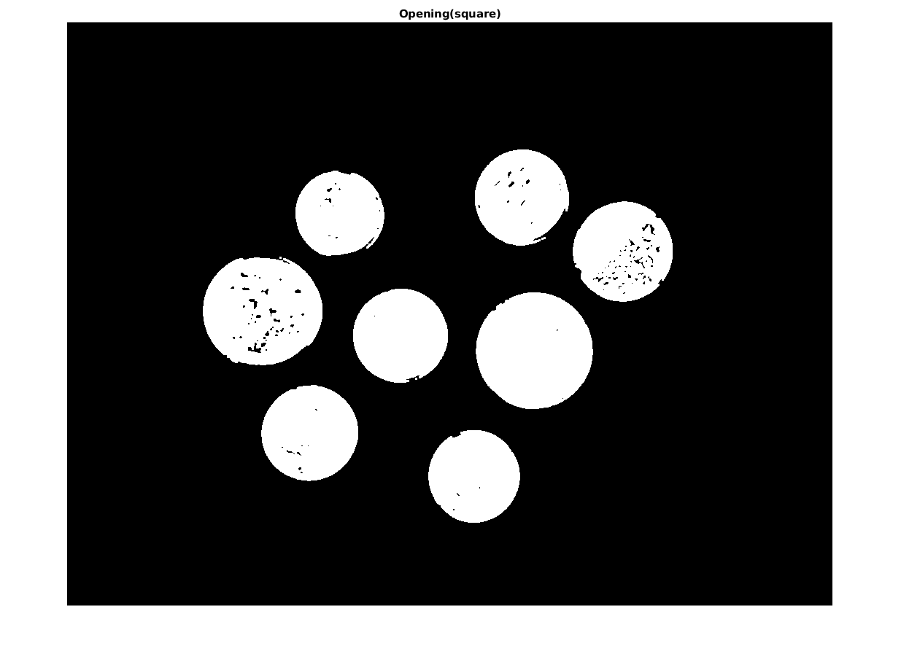
Task 1. Skeleton
S = bwmorph(I, 'skel');
figure; imshow(S); title('Skeleton'); drawnow;
Task 1. Morphological undelining
I_border1 = I - imerode(I, SS);
I_border2 = I - imerode(I, SD);
figure; imshow(I_border1); title('Border(square)'); drawnow;
figure; imshow(I_border2); title('Border(disk)'); drawnow;
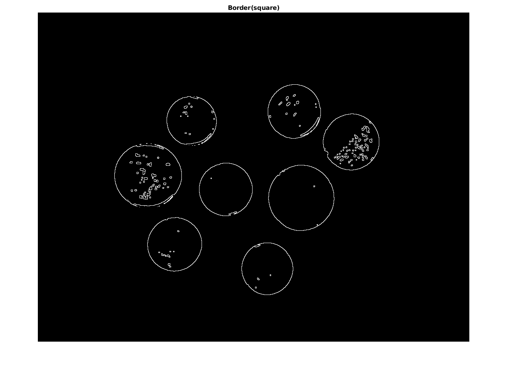 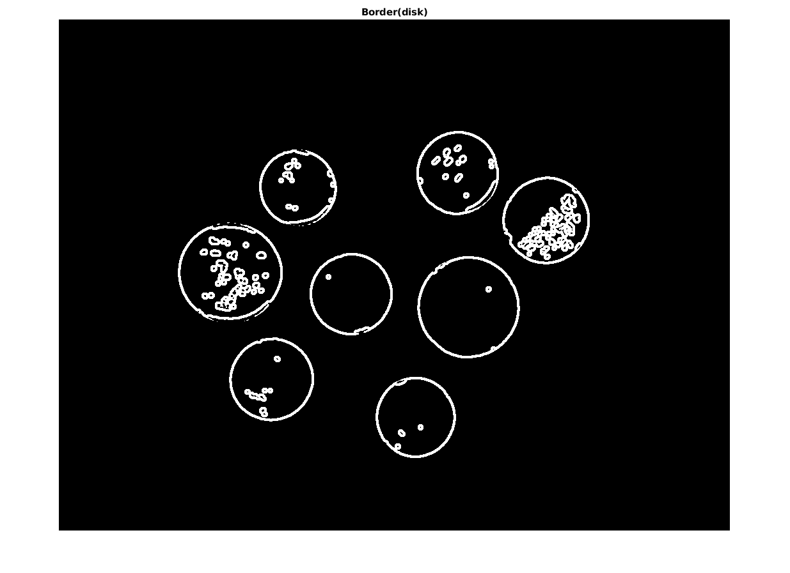
Task 1. Thinning
k = [1 0 -1; 1 1 -1; 1 0 -1];
angle = 0;
I_border = I;
for i=1:600
I_border = I_border & ~(bwhitmiss(I_border, imrotate(k, angle)));
angle = angle + 45;
end
figure; imshow(I_border); title('Thinning'); drawnow;
I_hom = bwmorph(I, 'thin', Inf); figure; imshow(I_hom); title('bwmorph'); drawnow;
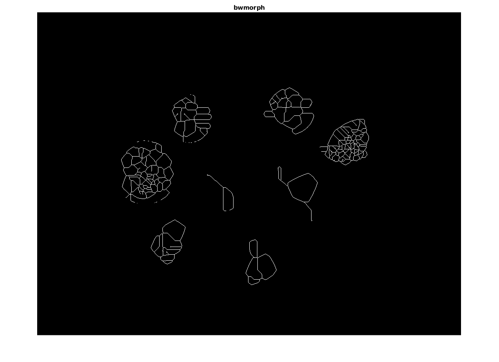
Task 2
clc; close all; clear;
I = imread('barbara.png'); figure; imshow(I); title('Original'); drawnow;
SD = strel('diamond', 5);
SB = strel('ball', 6, 0.1);
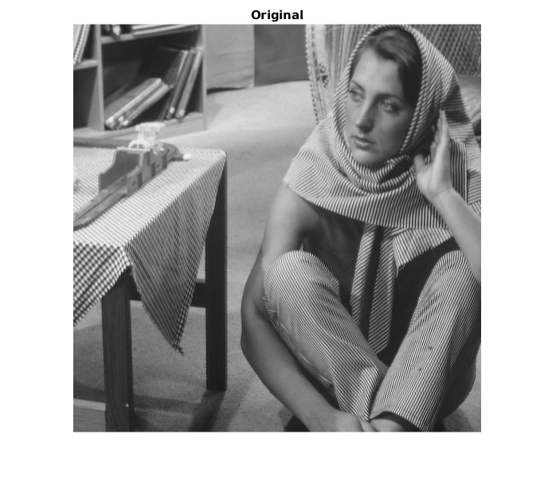
Task 2. Erode
I_erode1 = imerode(I, SD);
I_erode2 = imerode(I, SB);
figure; imshow(I_erode1); title('Erode(diamond)'); drawnow;
figure; imshow(I_erode2); title('Erode(ball)'); drawnow;
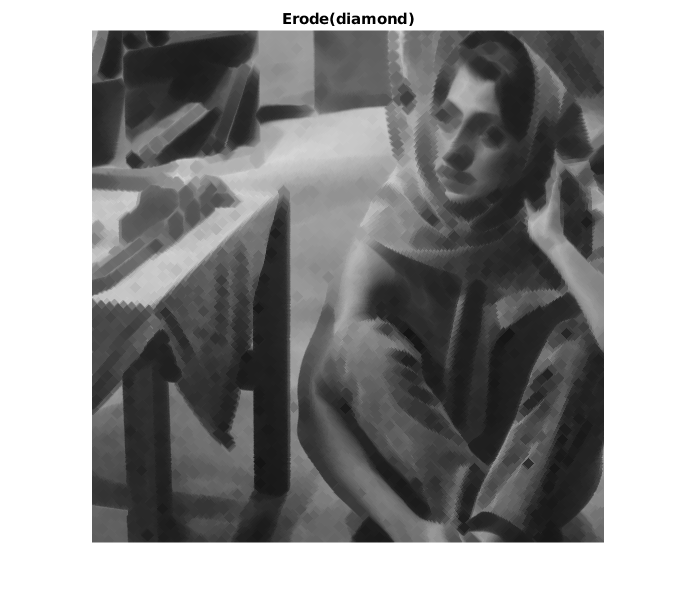 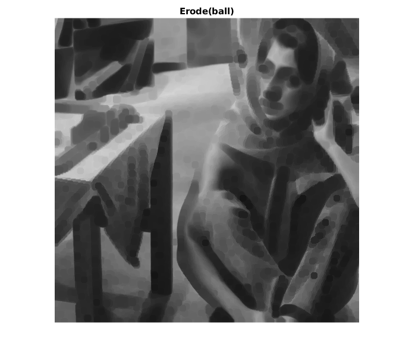
Task 2. Dilate
I_dilate1 = imdilate(I, SD);
I_dilate2 = imdilate(I, SB);
figure; imshow(I_dilate1); title('Dilate(diamond)'); drawnow;
figure; imshow(I_dilate2); title('Dilate(ball)'); drawnow;
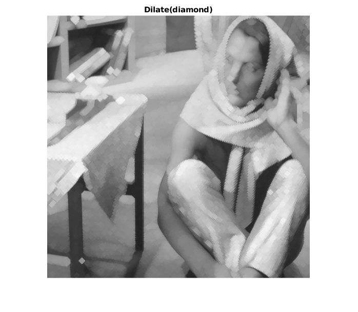
Task 2. Closing
I_close1 = imclose(I, SD);
I_close2 = imclose(I, SB);
figure; imshow(I_close1); title('Closing(diamond)'); drawnow;
figure; imshow(I_close2); title('Closing(ball)'); drawnow;
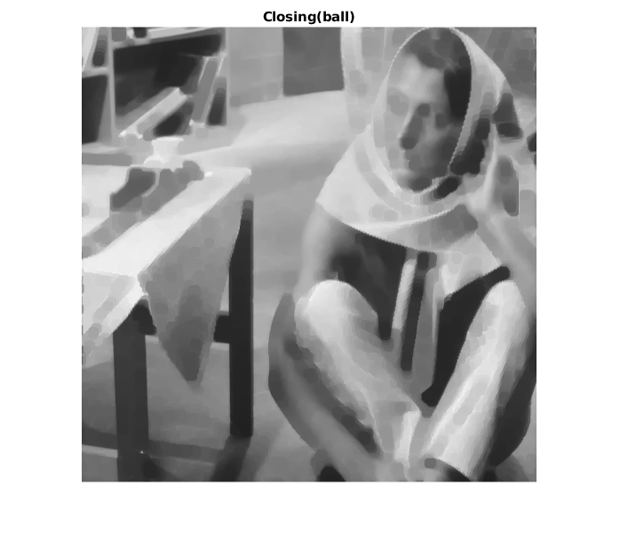
Task 2. Opening
I_open1 = imopen(I, SD);
I_open2 = imopen(I, SB);
figure; imshow(I_open1); title('Opening(diamond)'); drawnow;
figure; imshow(I_open2); title('Opening(ball)'); drawnow;
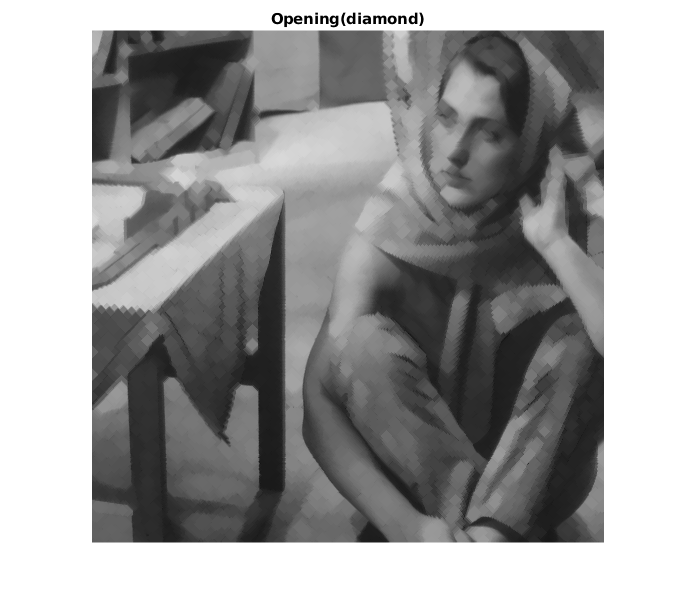 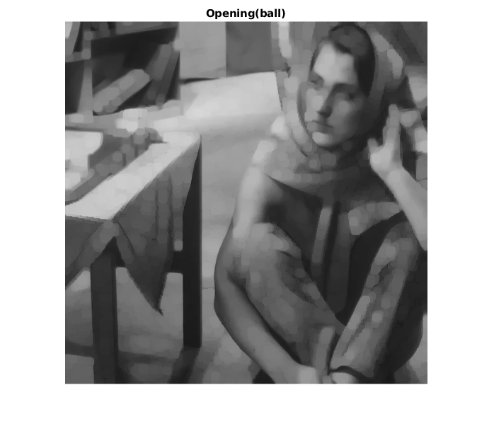
Task 2. Blur
I_blur1 = imclose(imopen(I, SD), SD);
I_blur2 = imclose(imopen(I, SB), SD);
figure; imshow(I_blur1); title('Blur(diamond)'); drawnow;
figure; imshow(I_blur2); title('Blur(ball)'); drawnow;
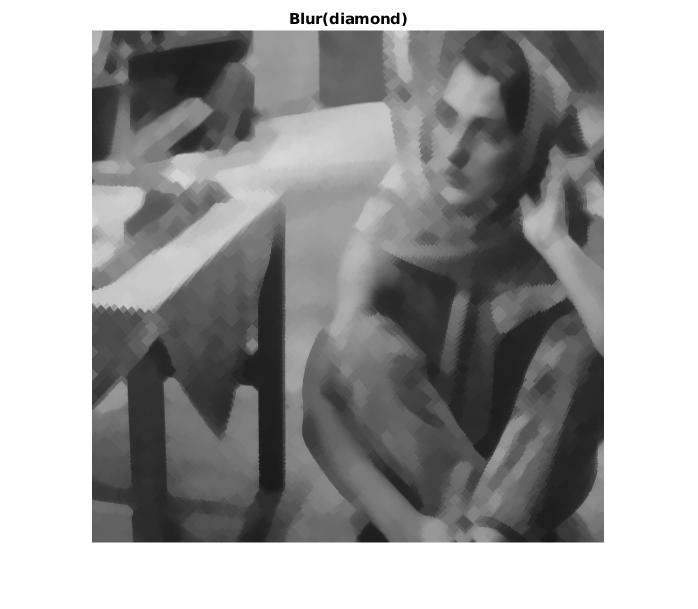 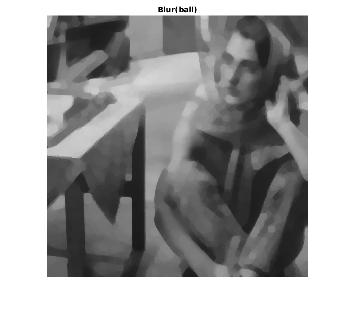
Task 2. Borders
I_border1 = I - imerode(I, SD);
I_border2 = I - imerode(I, SB);
figure; imshow(I_border1); title('Border(diamond)'); drawnow;
figure; imshow(I_border2); title('Border(ball)'); drawnow;

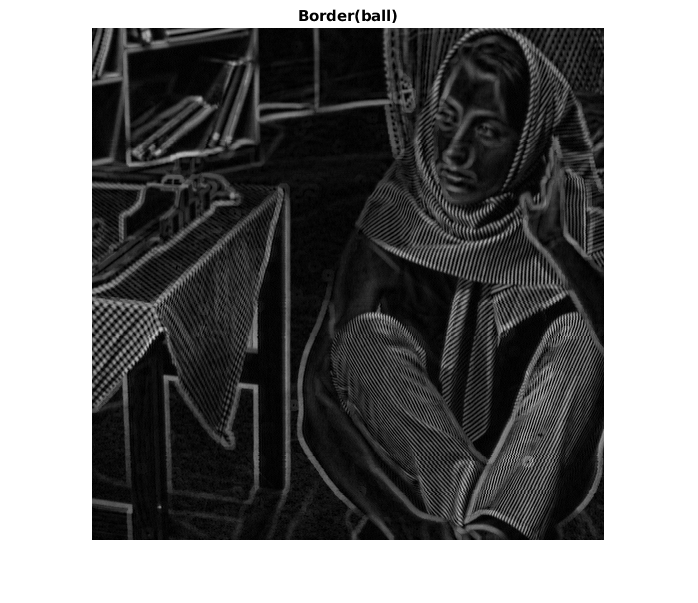
Task 2. Top-hat
I_tophat1 = imtophat(I, SD);
I_tophat2 = imtophat(I, SB);
figure; imshow(I_tophat1); title('Top-hat(diamond)'); drawnow;
figure; imshow(I_tophat2); title('Top-hat(ball)'); drawnow;
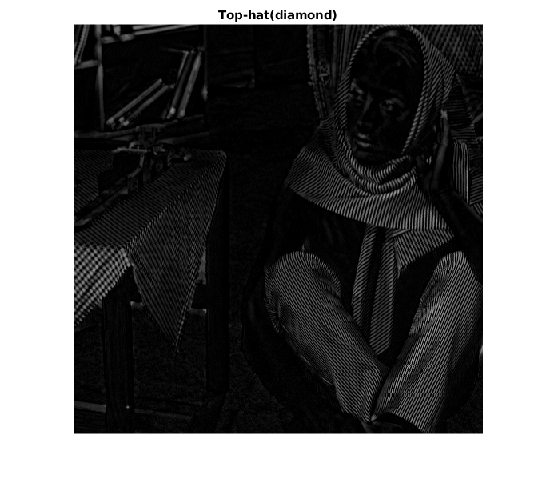 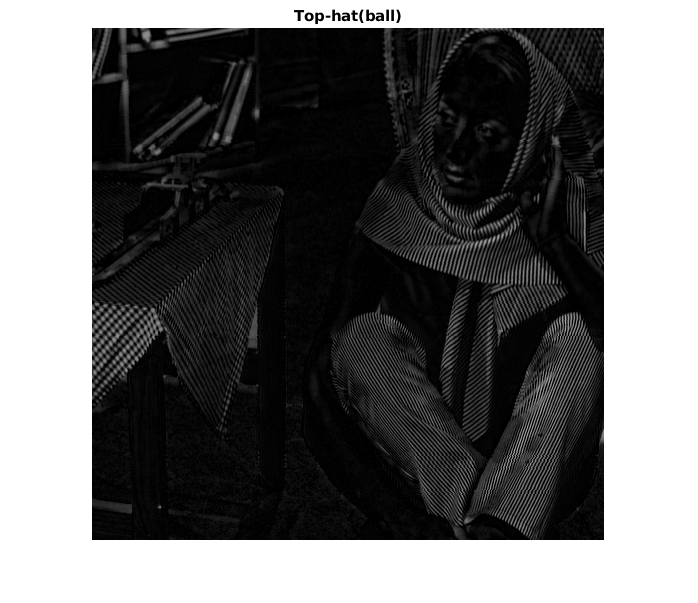
Task 2. Bottom-hat
I_tophat1 = imbothat(I, SD);
I_tophat2 = imbothat(I, SB);
figure; imshow(I_tophat1); title('Bottom-hat(diamond)'); drawnow;
figure; imshow(I_tophat2); title('Bottom-hat(ball)'); drawnow;
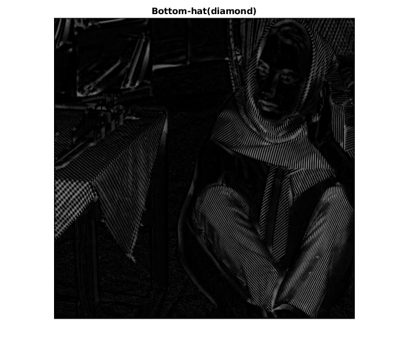
Task 2. Underlining
I_border1 = I - imbothat(I, SD) + imtophat(I, SD);
I_border2 = I - imbothat(I, SB) + imtophat(I, SB);
figure; imshow(I_border1); title('Underlined contours(diamond)'); drawnow;
figure; imshow(I_border2); title('Underlined contours(ball)'); drawnow;
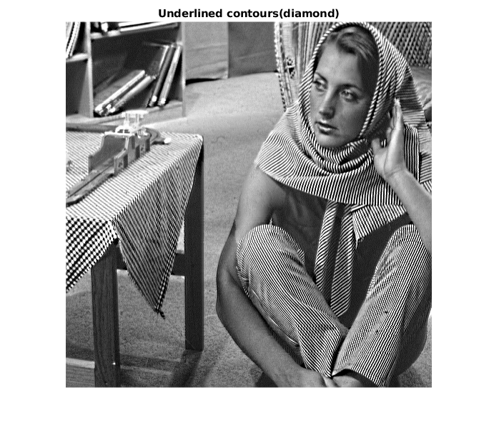
В данном методе проводится используется и top-hat, и bottom-hat, что позволяет выделить и белые контуры на темном фоне и наоборот.